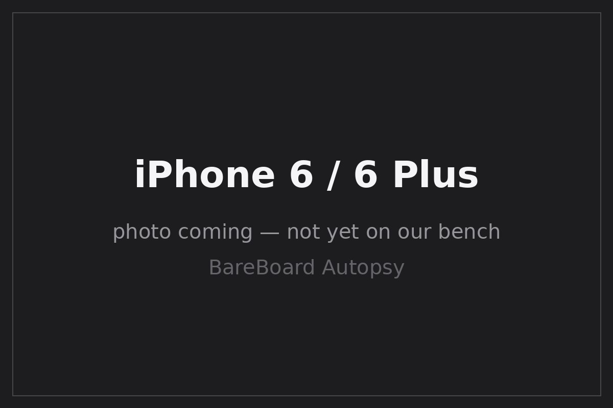

BareBoard Autopsy Report · Mobile Phones
iPhone 6 / 6 Plus Confirmed
Apple's first big-screen iPhones — announced September 9, 2014 and released September 19, 2014 Wikipedia — built on the Apple A8 (APL1011) with a Qualcomm MDM9625M baseband Likely TechSpot / iFixit teardown. FCC IDs: BCG-E2816A (iPhone 6) and BCG-E2817A (iPhone 6 Plus) Confirmed FCC — Apple authorized FCC IDs (DOC-341019A2). We have never owned, opened, booted, probed, tested, or disassembled an iPhone 6 or 6 Plus.

What is this thing?
The iPhone 6 (4.7-inch) and iPhone 6 Plus (5.5-inch) are Apple's eighth-generation iPhones, the first to move beyond the 4-inch screen size Wikipedia. Both run the Apple A8 SoC with 1 GB of LPDDR3 RAM Likely TechSpot / iFixit teardown. Apple identifies the iPhone 6 as model A1549/A1586 and the 6 Plus as A1522/A1524, with model numbers listed on Apple's own support pages Apple Support — identify your iPhone model.
Timeline
- 2014-09-09 — iPhone 6 and 6 Plus announced Wikipedia.
- 2014-09-19 — Released Wikipedia.
- 2014-09-19 — First public teardowns document the A8 (APL1011), Qualcomm MDM9625M/WTR1625L, NXP 65V10, and 1 GB LPDDR3 Likely iPhone in Canada teardown TechSpot / iFixit.
- 2015-03-08 — iPhone 6 Plus internal-photo exhibit reportedly becomes public in FCC records Likely.
- 2026-09-27 — This report published from public records; no unit on our bench.
Outside
B Home button with Touch ID fingerprint sensor Wikipedia
C Lightning connector, 3.5 mm headphone jack (bottom edge)
D Nano-SIM tray (side)
E Rounded aluminum unibody; antenna bands top and bottom Wikipedia
iPhone 6: 138.1 × 67 × 6.9 mm, 129 g. iPhone 6 Plus: 158.1 × 77.8 × 7.1 mm, 172 g Wikipedia.
Board
Public teardowns show a stacked logic-board design dominated by the Apple A8 package (with RAM in package-on-package), a Qualcomm baseband section (MDM9625M modem + WTR1625L transceiver), and an NXP NFC controller Likely Electronics360 video teardown TechSpot / iFixit.
Chips
| Ref | Marking / identity | Role | Confidence | Dig deeper |
|---|---|---|---|---|
| SoC | Apple A8 — APL1011 | Applications processor (dual-core 1.4 GHz, 20 nm) | Likely | TechSpot / iFixit teardown — no public datasheet (Apple custom silicon) |
| RAM | 1 GB LPDDR3 (package-on-package with A8) | Working memory | Likely | iPhone in Canada teardown — vendor varies by unit; no public datasheet claimed |
| BB | Qualcomm MDM9625M | LTE baseband modem | Likely | TechSpot / iFixit teardown — no public datasheet located |
| RF | Qualcomm WTR1625L | RF transceiver | Likely | TechSpot / iFixit teardown — no public datasheet located |
| NFC | NXP 65V10 | NFC controller (Apple Pay) | Likely | TechSpot / iFixit teardown — no public datasheet located |
| NAND | Vendor varies by unit/capacity | Flash storage (16/64/128 GB options) | Unknown | One teardown unit's NAND is not generalized — no claim made |
FCC
Apple's authorized-FCC-ID filing maps BCG-E2816A → iPhone 6 and BCG-E2817A → iPhone 6 Plus Confirmed FCC DOC-341019A2 (PDF). Internal photographs for the 6 Plus exhibit reportedly became public on 2015-03-08 Likely; we do not claim equivalent exhibit coverage for the iPhone 6 without reviewing its own exhibit list.
Debug / service modes
iPhones expose a DFU (Device Firmware Upgrade) mode and a diagnostic/recovery path that Apple documents for restore and service workflows at a high level. We describe these only as publicly documented device states. We have never entered DFU on this model, we publish no exploit chain, no boot-ROM procedure, no authentication defeat, and no instructions for bypassing any lock. We listen; we don't knock.
Public findings & what we didn't do
- ✅ Mapped both FCC IDs from Apple's authorized filing FCC DOC-341019A2.
- ✅ Assembled the teardown-backed chip table (A8 APL1011, MDM9625M, WTR1625L, NXP 65V10, 1 GB LPDDR3) TechSpot / iFixit.
- ✅ Refused to generalize one unit's NAND vendor across capacities/revisions.
- ❌ We have not opened, booted, probed, or photographed an iPhone 6/6 Plus ourselves.
- ❌ We have not verified board revision, PMIC/RF supporting cast, or storage vendor on any unit.
- ❌ We have not measured power, captured a boot log, or entered DFU on this model.
By the numbers
| Metric | Value | Source |
|---|---|---|
| Display | 4.7″ 750×1334 (6); 5.5″ 1080×1920 (6 Plus) | Wikipedia |
| SoC / RAM | Apple A8 (APL1011); 1 GB LPDDR3 | Likely TechSpot / iFixit |
| Storage options | 16 / 64 / 128 GB (vendor varies) | Wikipedia |
| Weight | 129 g (6); 172 g (6 Plus) | Wikipedia |
| FCC IDs | BCG-E2816A (6); BCG-E2817A (6 Plus) | Confirmed FCC DOC-341019A2 |
Glossary
| APL1011 | Apple's internal part number for the A8 SoC package. |
| MDM9625M | Qualcomm LTE baseband modem (Gobi 9x25 family). |
| WTR1625L | Qualcomm RF transceiver paired with the MDM9625M. |
| Package-on-package | Stacking the RAM die directly atop the SoC package to save board area. |
| DFU | Device Firmware Upgrade — a low-level restore state on Apple devices. |
Sources & confidence
- FCC DOC-341019A2 — Apple's authorized FCC IDs (primary evidence).
- TechSpot / iFixit — iPhone 6/6 Plus teardown (secondary, teardown-backed).
- iPhone in Canada — launch-day teardown (secondary, teardown-backed).
- Electronics360 — video teardown (secondary).
- iPhone 6 — Wikipedia (secondary).
- Apple Support — identify your iPhone model (primary, manufacturer).
| Claim | Confidence | Basis |
|---|---|---|
| FCC IDs BCG-E2816A (6) / BCG-E2817A (6 Plus) | Confirmed | Apple's FCC filing (primary evidence) |
| A8 APL1011, 1 GB LPDDR3, MDM9625M, WTR1625L, NXP 65V10 | Likely | Multiple independent teardowns; die-level verification awaits the bench |
| Dates, dimensions, storage options | Likely | Corroborated secondary records + Apple support |
| NAND vendor per unit | Unknown | Multi-sourced; not generalized |
| Board revision, supporting cast | Unknown | Awaits the bench |
Legal note
This report is a transformative educational summary of publicly available records. Product names and marks belong to their owners. We describe only publicly documented device states at a high level; we publish no exploit chains, boot-ROM procedures, lock bypasses, authentication defeats, firmware-extraction procedures, or unsafe service instructions. Our posture: we listen, we don't knock.
Related reports
- iPhone 6s / 6s Plus — the A9 successor generation
- iPhone 5s — the A7 predecessor
- iPhone 11 family — five generations later